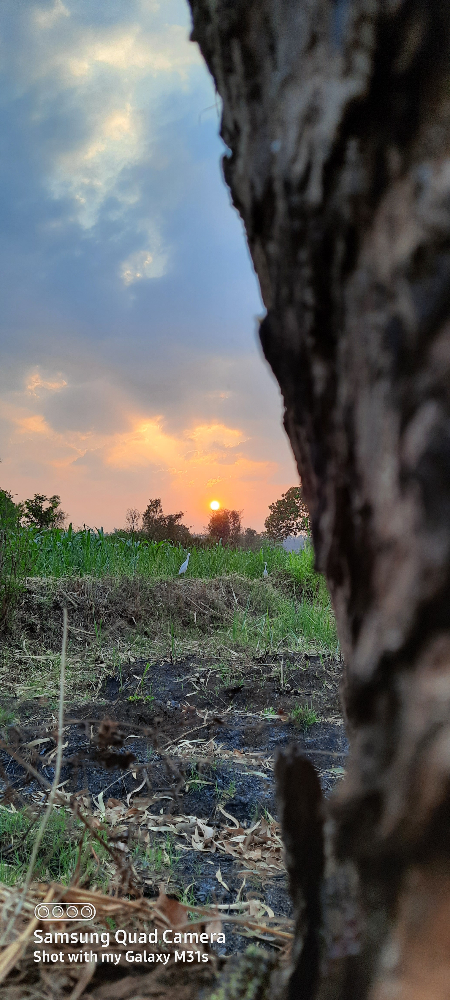
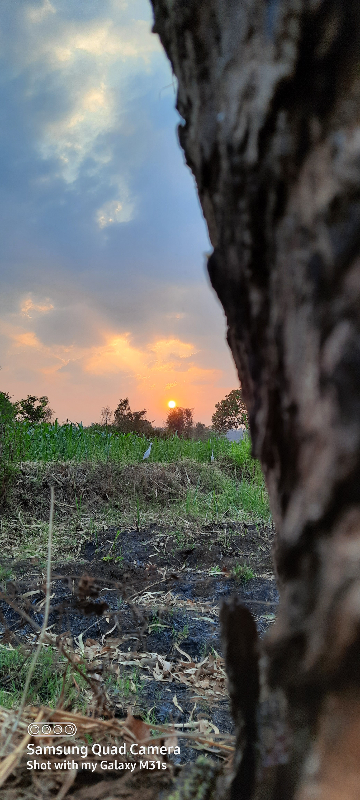

rounded corner of image
circle
image in circle shape

thumbnail
this class create thumbnail of image
centered Images
Aligning Images
float image left and float image right
image in circle shape
this class create thumbnail of image
float image left and float image right